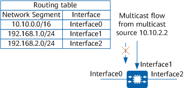
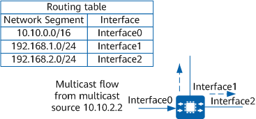

Fundamentals
In unicast routing and forwarding, unicast packets are transmitted along a point-to-point path. To determine the outbound interfaces of packets, devices only need to learn the packets' destination addresses. Multicast routing and forwarding is different. The destination address of a multicast packet is a multicast address, which identifies a group of receivers. The location of a specific receiver, therefore, cannot be determined based on the destination address. However, the source address of a multicast packet is known and therefore can be used to ensure correct forwarding of the multicast packet.
After a device receives a multicast packet, it searches the unicast routing table and multicast static routing table for the route to the packet source based on the source address of the packet. Then, the device checks whether the outbound interface of the route to the packet source is the same as the inbound interface of the received multicast packet. If they are the same, the device considers that the multicast packet arrives from the correct interface. This ensures the correctness and uniqueness of the entire forwarding path. This process is called an RPF check.
The correct interface is referred to as an RPF interface, that is, the interface that passes the RPF check.
RPF Check Process
After a device receives a multicast packet, it checks the packet as follows:
The device selects an optimal route from each of the unicast and multicast static routing tables according to the source address of the multicast packet. The outbound interface and next hop of the unicast route are an RPF interface and RPF neighbor, respectively. Note that the multicast static route is manually configured, with the RPF interface and RPF neighbor having been specified.
The device selects one from the routes as the RPF route according to the following rules:
- If longest match is configured for route selection, the device selects the route whose destination address has the longest matching mask with the source address. If the matching mask lengths of these routes are the same, the device selects the route with the highest priority. If they have the same priority, the device selects the route with the smallest cost. If they have the same route cost too, the device selects the route in the following order of preference: multicast static route > unicast route.
- If longest match is not configured for route selection, the device selects the route with the highest priority. If they have the same priority, the device selects the route with the smallest cost. If they have the same route cost too, the device selects the route in the following order of preference: multicast static route > unicast route.
The device compares the inbound interface of the packet with the RPF interface of the RPF route. If they are the same, the RPF check succeeds, indicating that the packet arrived along the correct path. The device then forwards the packet to the downstream device. If they are different, the RPF check fails, indicating that the packet arrived from an incorrect path. The device then discards the packet.
In
Figure 1, a device performs an RPF check based on the routing table after a multicast flow from multicast source 10.10.2.2 arrives at the device through interface1. In the routing table, the outbound interface of the route to 10.10.0.0/16 is interface0 rather than interface1. Therefore, the RPF check fails, and the device discards the data flow received from interface1.
Figure 1 RPF check failure
In
Figure 2, a multicast flow sent from multicast source 10.10.2.2 arrives at the device through interface0. The device checks the routing table and finds that the inbound interface of the matched route is also interface0, same as the interface that receives the multicast flow, indicating that the RPF check succeeds. The multicast flow is then correctly forwarded.
Figure 2 RPF check success
Application of RPF Checks in Multicast Data Forwarding
Multicast routing protocols use information about existing unicast routes or multicast static routes to determine upstream and downstream neighbors and create multicast routing entries. The RPF check mechanism enables multicast data flows to be transmitted along the correct MDTs (paths) and prevents loops on forwarding paths.
During multicast data forwarding, a device will be heavily burdened if it performs an RPF check on each received multicast data packet based on the unicast routing table. To address this issue, a device can first search the MFIB for a matching (S, G) entry after receiving a data packet sent from source S to group G.
- If no matching (S, G) entry exists, the device performs an RPF check on the packet, uses the found RPF interface (if present) as the inbound interface, creates a multicast routing entry, and delivers the entry to the MFIB. In particular, the RPF check result is handled as follows: If the RPF check succeeds, the inbound interface of the packet is the RPF interface, and the device forwards the packet to all the outbound interfaces in the forwarding entry. If the RPF check fails, the device drops the packet as the packet was forwarded along an incorrect path.
- If a matching (S, G) entry is found and the inbound interface of the packet is the same as the inbound interface in the entry, the device forwards the packet to all the outbound interfaces.
- If a matching (S, G) entry is found but the inbound interface of the packet is different from the inbound interface in the entry, the device performs an RPF check on the packet. Depending on the RPF check result, the device performs the following operations:
- If the RPF interface is the same as the inbound interface in the entry, the (S, G) entry is correct, and the packet is forwarded along an incorrect path. The device then drops the packet.
- If the RPF interface is different from the inbound interface in the entry, the (S, G) entry is outdated. The device then changes the inbound interface in the entry to be the same as the RPF interface. After that, the device compares the RPF interface with the inbound interface of the packet. If they are identical, the device forwards the packet to all the outbound interfaces specified in the entry. Otherwise, the device discards the packet.